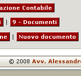
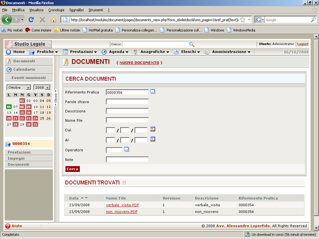

Con Knomos puoi creare il tuo fascicolo virtuale allegando anche i documenti del tuo fascicolo cartaceo.
La procedura è semplice ed intuitiva! Basta premere il pulsante "documenti" per poter fare ciò.

